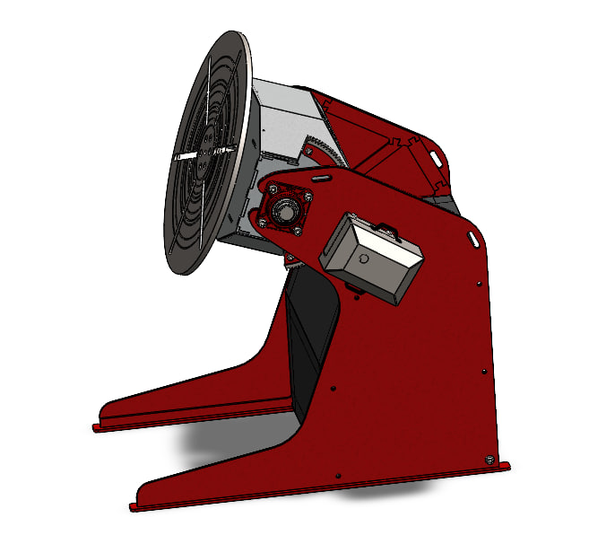

Dual-Axis Welding Positioner
Mechanical Design | PCB Development | Arduino Control

Project Overview
This project involves the design and development of a semi-automated dual-axis welding positioner intended to improve the positioning of pipe and flange workpieces during welding operations.
The system combines mechanical design, electronic control, and embedded programming to provide controlled workpiece rotation and tilting.
My Contributions
- Mechanical design and 3D modeling using SolidWorks.
- Design of the electronic control circuit schematic.
- PCB layout and development using KiCad.
- PCB fabrication and prototype preparation.
- Arduino programming and stepper motor control.
- Integration of the mechanical and electronic systems.
Mechanical Design
The mechanical assembly was developed in SolidWorks, including the supporting frame, workpiece faceplate, shafts, and tilting mechanism.
Electronic Design and PCB Fabrication
The electronic control board was designed in KiCad. The development process included circuit schematic preparation, PCB layout, and physical board fabrication.
Arduino Control System
Arduino programming was developed to control the stepper motors and coordinate the rotation and tilt functions of the positioner.
Tools and Technologies
SolidWorks · KiCad · Arduino · Stepper Motors · Embedded Systems · PCB Fabrication
Project Status
Mechanical design, electronic control circuit development, PCB layout, PCB fabrication, and Arduino-based motor control development have been carried out as part of the project. The system is undergoing prototype development and integration.
Project: YASART
My Role: Mechanical Design, PCB Design, Arduino Programming, and Motor Control